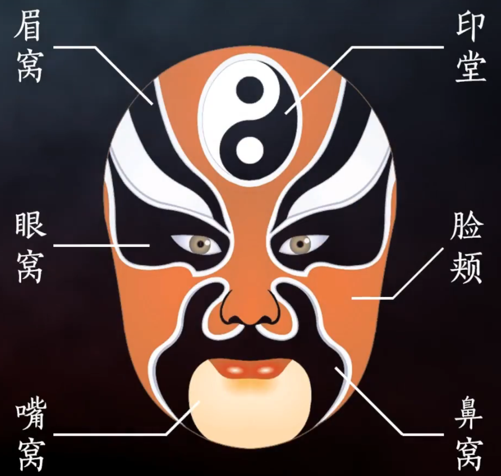
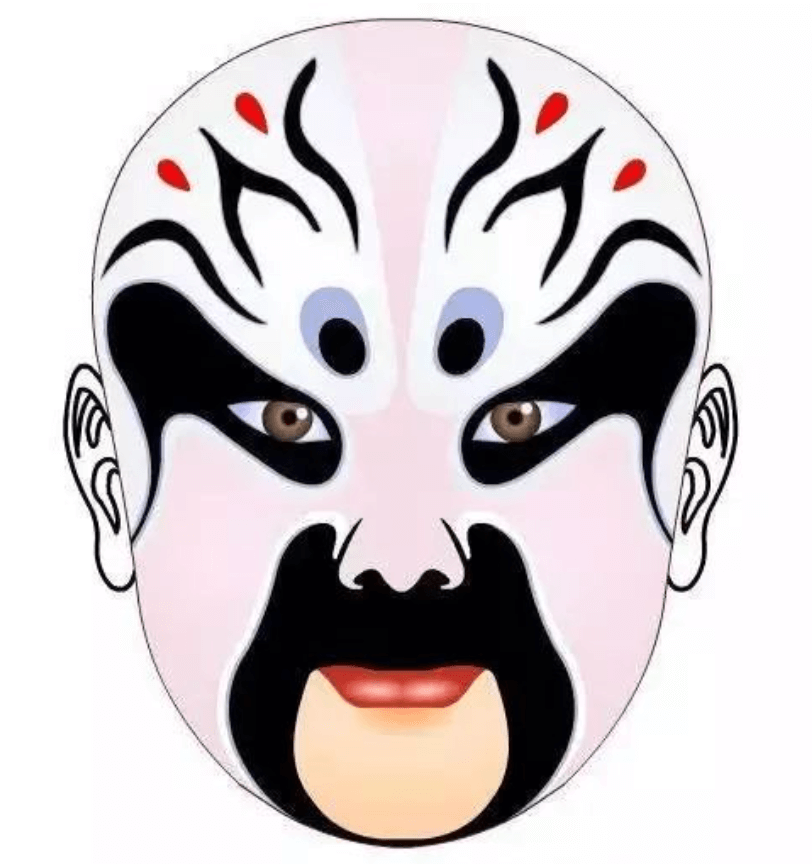
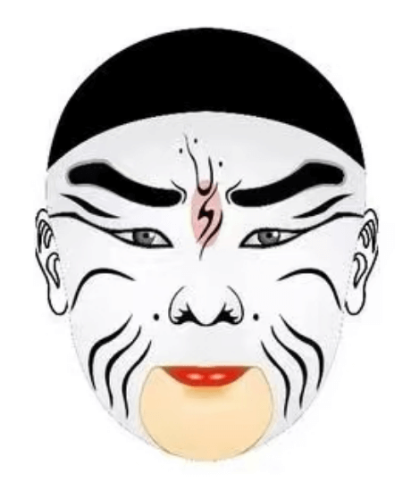

首页
发展历程
戏曲行当
戏曲脸谱
戏曲剧种
基础五官

介绍
脸谱的结构，包括眉子、眼窝、鼻窝、嘴窝、脑门、脸蛋等部位。其中以眉、眼窝为主体。提到脸谱，首先是眉是勾的直眉、尖眉，还是其他眉。然后是眼窝，直眉一般是直眼窝，尖眉也就是尖眼窝了。鼻窝也配合着眼窝。勾完了眉、眼和鼻窝后，脸谱的大局就奠定了，随着就是分开脑门和脸蛋。露嘴的还得勾嘴。脑门以及脸蛋上的花纹主要是为了美观。 按照人物的性格，素净简单的脸谱为状素沉着，花纹复杂的为鲁莽凶猛。按照结构，脸谱的格式有整脸、三块瓦脸、花三块瓦脸、碎脸、元宝脸、老连、蝴蝶脸、十字门脸、僧道脸、小妖脸、歪脸等。 整脸只勾眉子，把整脸加上眼窝鼻窝就成了三块瓦脸，眉、眼和鼻窝复杂的为花三块瓦脸，比花三块瓦脸更复杂的为碎脸，这些变化都是有迹可循的。从抹脸中的大白脸起，经过元宝脸、腰子粉脸、豆腐块粉脸，知道枣核粉脸，脸上涂白粉的面积逐步缩小，在人物的性格上也从奸雄到机智。中间有奸悄，从净角到丑角脸谱显出了连续的过渡性。
颜色

红色一般用来表示耿直、忠义、有血性，多表现正面角色。忠勇良将、有道神仙勾画红色脸谱，如关羽、姜维等。
谱式结构
整脸
三块瓦脸
花三块脸
六分脸
十字门脸
碎花脸
元宝脸
象形脸
僧道脸
歪脸
太监脸
神仙脸
丑角脸

整脸：整个面部涂一种颜色为主色，再勾眉、眼、鼻、口的轮廓，然后再勾画整个面部肌肉的纹理，表现出任务的神色和气质。